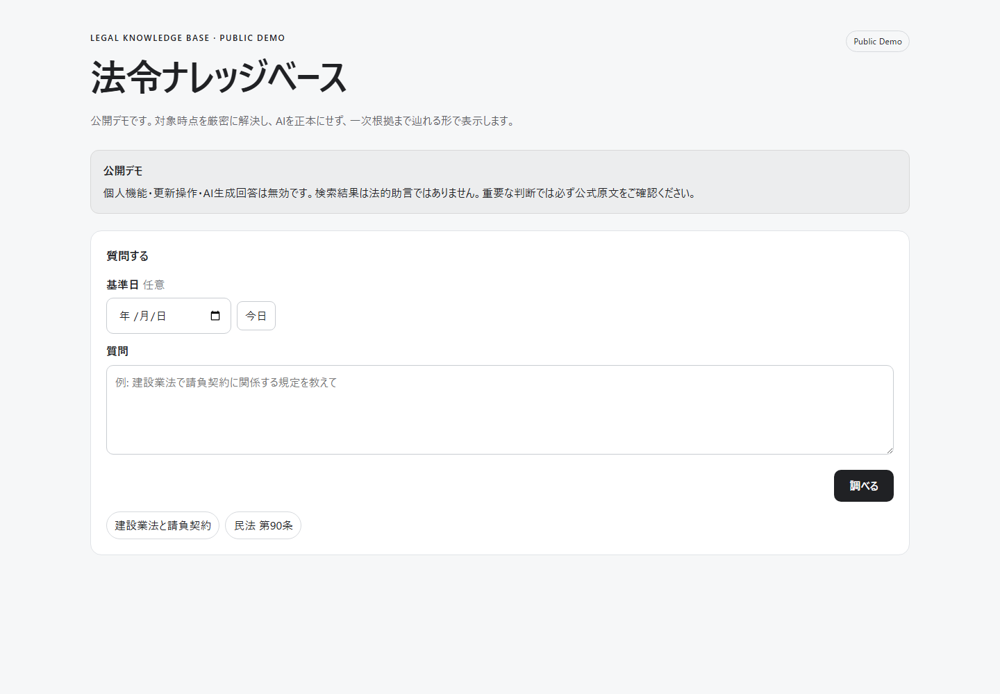

Point-in-time Resolution
法令IDと対象日からrevision候補を解決し、same-day複数revisionなどで一意に確定できない場合は曖昧なまま返します。
Python / PostgreSQL / e-Gov / Search & RAG
Phase 1–8 Complete

日本の法令について、e-Gov法令APIと法令XMLなどの一次情報を基盤に、改正履歴、時点指定、XML構造、出典追跡、検索/RAGを一つの流れで扱えるようにした知識基盤です。単に最新条文を探すのではなく、「ある日付ではどのrevisionが対象か」「その回答はどの原文に由来するか」まで辿れることを重視しています。
法令IDと対象日からrevision候補を解決し、same-day複数revisionなどで一意に確定できない場合は曖昧なまま返します。
検索結果から根拠条文、revision、XML path、RAW provenanceへ戻れるEvidence経路を持ち、AI生成文だけを根拠にしません。
2つの時点を別々に解決し、本則・附則の文脈を保ちながら条文の追加、削除、変更を比較できます。
官報、国会会議録、帝国議会会議録、NDL資料を外部資料層として扱い、確認済みrelationだけを引用可能にします。
匿名利用者向けのread-onlyデモです。PC上の分離runtimeをTailscale Funnel経由で公開しているため、実行環境が停止している時間帯はアクセスできない場合があります。